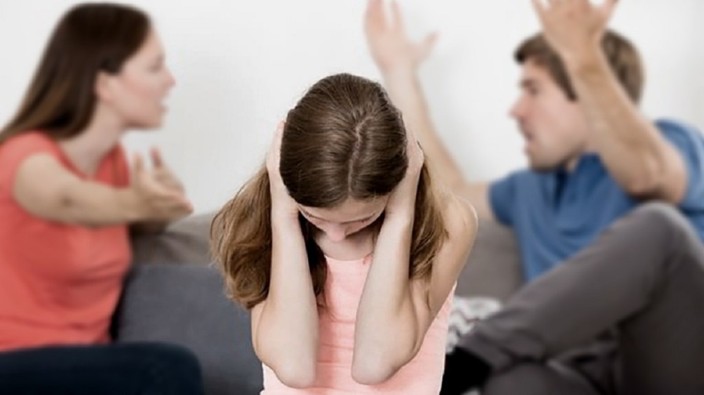

la violencia no es amor.
tienes derecho a vivir sin miedo
¿Sabías que la violencia doméstica NO es tu culpa? Nadie tiene derecho a controlarte, humillarte ni lastimarte. Existen recursos y ayuda disponible.

Señales de abuso:
Control sobre tu dinero, actividades o decisiones. Aislamiento de tus seres queridos. Amenazas, gritos o violencia física/psicológica.
Recuerda:
Tienes el derecho a una vida libre de abuso. Nadie tiene derecho a controlarte ni a dañarte. Busca apoyo, ya sea con amigos, familiares o profesionales
Recursos:
Línea de ayuda para violencia doméstica: 112
Rompe el ciclo de violencia. Tienes derecho a vivir en paz